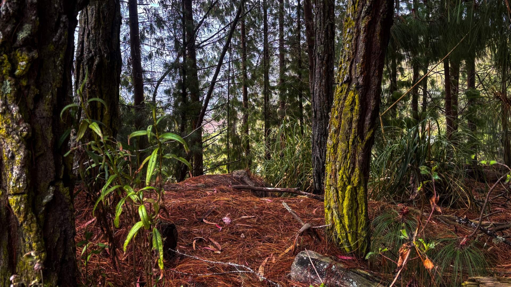
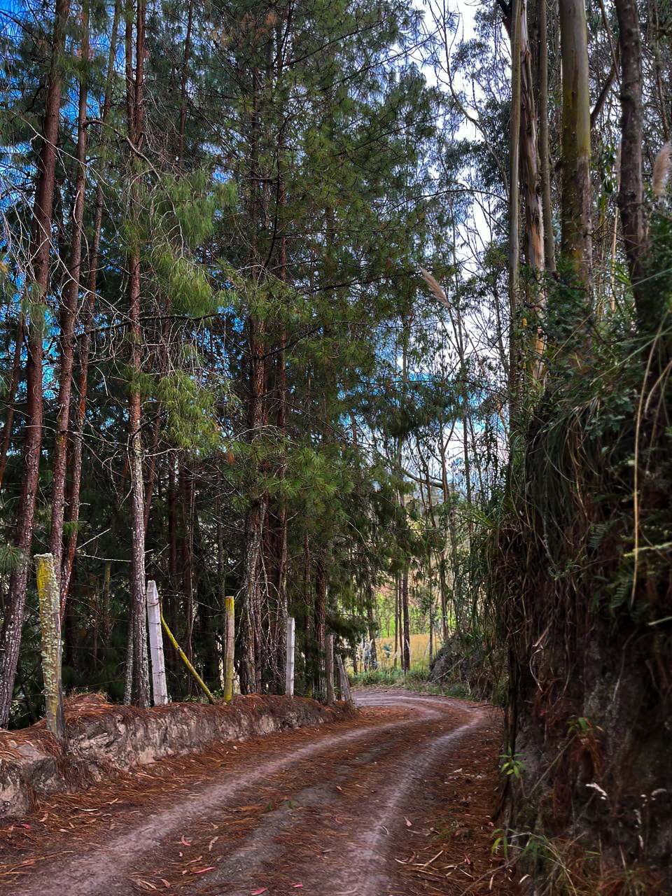
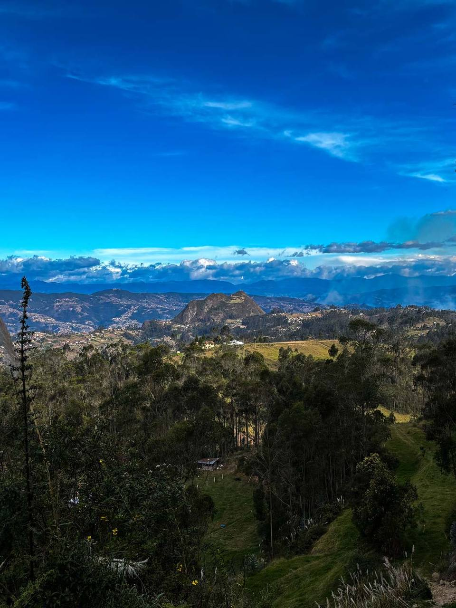
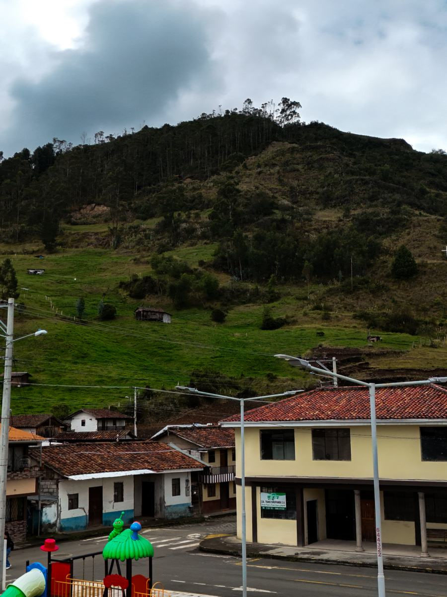
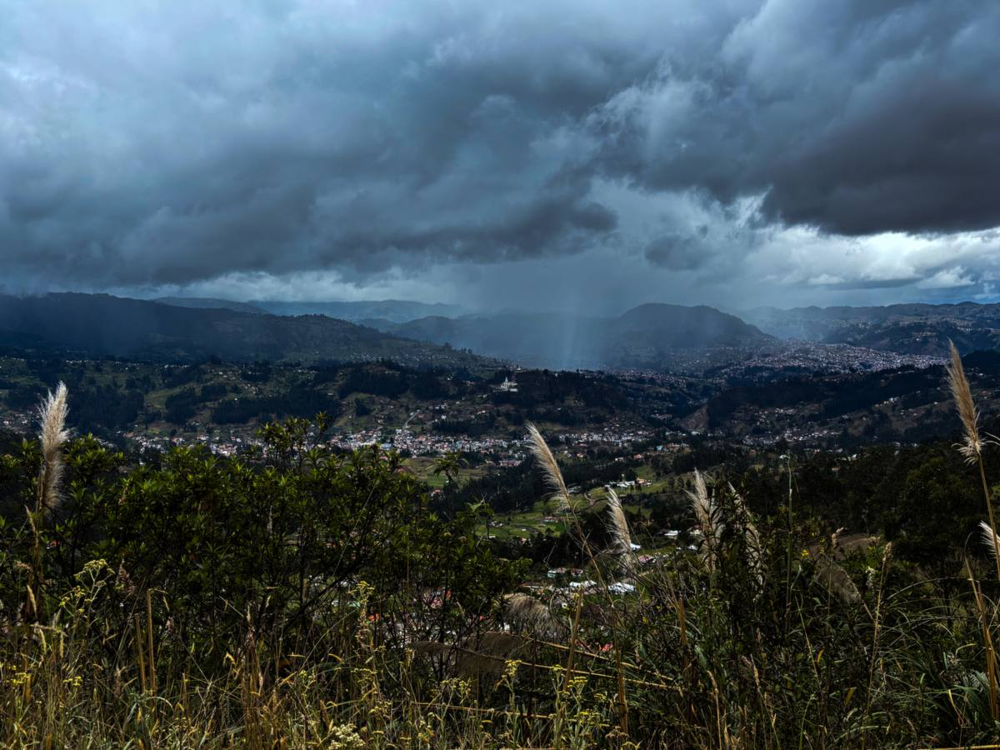
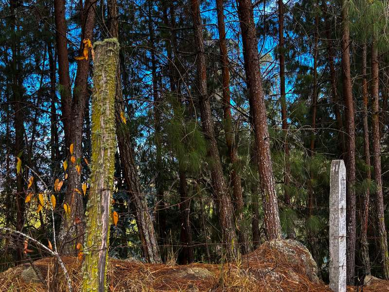
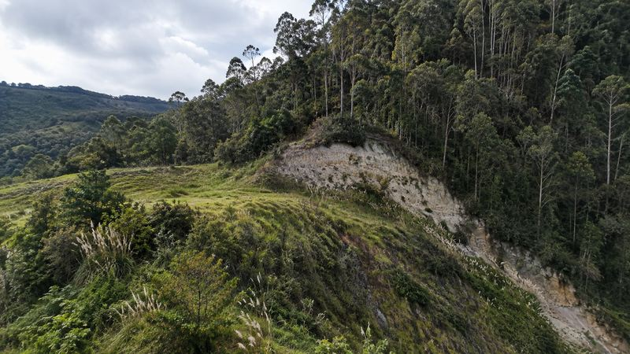
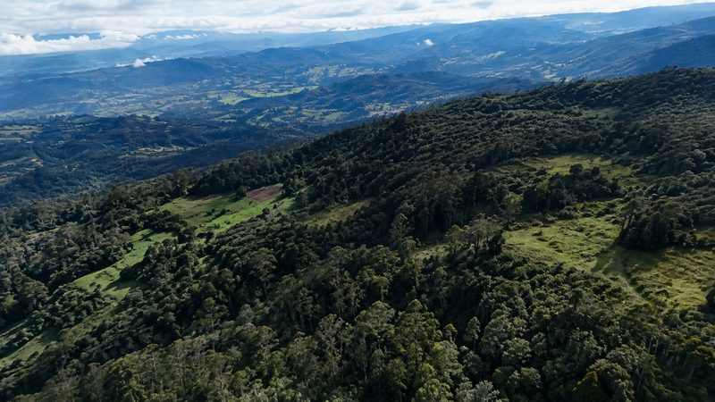
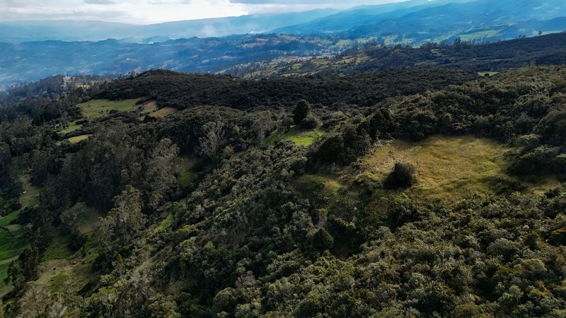

Una cueva en lo alto
En las faldas del Shuriray, una cueva guarda la imagen del Señor de Belén, un santuario hecho por la propia montaña.




En las faldas del Shuriray, una cueva guarda la imagen del Señor de Belén, un santuario hecho por la propia montaña.
La comunidad de San Luis de Mangán cuida su propia cueva y su cima en el Shuriray, un santuario natural.
Cada año, a mediados de julio, comuneros y visitantes suben juntos en caminata y peregrinación.
Desde el centro de Biblián, una chiva o camioneta te lleva hasta San Luis de Mangán. Ahí empieza la subida hacia la cueva del Señor de Belén y la cima del Shuriray, entre oraciones y paradas de descanso. Arriba te espera la pampa mesa: comida andina compartida sobre mantas en el suelo.

Sube las pendientes del Shuriray junto a la comunidad, entre oraciones y descansos. Al llegar a la cima, todos comparten la pampa mesa: papas, habas, mellocos, queso y maíz servidos sobre mantas para todos.



